⬅ Vissza a főoldalra
8. tétel: Számítógép-hálózatok osztályozási szempontjai. Hálózati rétegmodellek. IP technológia címzési rendszere, és vezérlése. Forgalomirányítás elve és az útválasztási kategóriák jellemzése. TCP és UDP mechanizmusok.
Hálózati alapfogalmak
A számítógép-hálózat nem más, mint önálló (autonóm) gépek összekapcsolt rendszere, amelyeket azért kötnek össze, hogy közösen elvégezzenek valamilyen feladatot.
A hálózatépítés fő céljai
- Kommunikáció: Lehetőséget biztosít emberek és gépek közötti adatcserére.
- Erőforrásmegosztás: Közös használatú eszközök (pl. nyomtatók) és adatok elérése.
- Skálázhatóság: A rendszer könnyen bővíthető újabb elemekkel.
- Takarékosság és megbízhatóság: Olcsóbb és biztonságosabb üzemeltetés a megosztott és többszörözött erőforrások révén.
A hálózat összetevői
- Hardveres elemek: Számítógépek, perifériák (nyomtatók, szkennerek).
- Összekötő berendezések: Kapcsolók (switchek), forgalomirányítók (routerek), valamint a fizikai vezetékek és kábelek.
- Szoftveres elemek: Protokollok, hálózati operációs rendszerek és alkalmazások, amelyek a működést vezérlik.
Kommunikációs alapfogalmak
A hálózati kommunikációhoz szükség van eszközökre, amelyek üzenetet küldenek és fogadnak, valamint egy útra, amin az üzenet halad.
Kapcsolási módok
A hálózatok különböző módon építhetik fel az utat az adatok számára:
- Vonalkapcsolt: A kommunikáció idejére egy fix, dedikált fizikai utat foglal le a két fél között. Amíg tart a kapcsolat, senki más nem használhatja azt az utat. (Hagyományos telefonhálózat).
- Üzenetkapcsolt: Az üzenetet a köztes csomópontok először teljes egészében letárolják, majd továbbküldik a következő pontra ("Store-and-forward"). (Régi telex rendszerek).
- Csomagkapcsolt: Az adatot kis darabokra, úgynevezett csomagokra bontják. Minden csomag külön-külön, akár más-más útvonalon is eljuthat a célhoz, ahol végül újra összeállnak. (Az internet alapműködése).
Számítógép-hálózatok osztályozási szempontjai
A hálózatokat az alábbi négy fő szempont szerint csoportosítjuk:
1. Lefedett fizikai terület mérete szerint
- BAN (Body Area Network): Hálózat az emberi testen vagy a testben (pl. agy-számítógép interfész / BCI).
- PAN (Personal Area Network): Személyi hálózat, egyéni használatra szánt eszközök kapcsolata.
- SOHO (Small Office / Home Office): Otthoni vagy kiscéges hálózat.
- LAN (Local Area Network – Helyi hálózat):
- Kiterjedése viszonylag kicsi (néhány km2), jellemzően egy intézményre korlátozódik.
- Kiépítését és menedzselését maga az intézmény végzi.
- Jellemzői: Állandó hozzáférés, nagy átviteli sebesség (10 – 10 000 Mbps).
- Biztonság: A technológiából és a rövid távolságból adódóan magas.
- Eszközei: Repeater, Bridge, Switch, Router.
- Átviteli közeg: Huzalozott (csavart érpár, koaxiális kábel, optikai szál) vagy vezeték nélküli (rádióhullám).
- MAN (Metropolitan Area Network – Városi/területi hálózat):
- Területe egy várost vagy néhány kerületet fed le (pl. egyetem több telephelye, bankfiókok).
- Két vagy több LAN hálózatot kapcsol össze, jellemzően szolgáltatótól bérelt vonalakon keresztül.
- Technológiája leggyakrabban megegyezik a LAN-éval.
- WAN (Wide Area Network – Nagyterületi hálózat):
- Nagy, földrajzilag elkülönített területek között működik.
- Lehetővé teszi távoli erőforrások (e-mail, WWW, fájlátvitel) elérését és valós idejű együttműködést.
- GAN (Global Area Network): Globális hálózat, maga az Internet.
2. Adatátviteli ráta (sebesség) szerint
- Klasszikus hálózatok: A sebesség kbps és Mbps nagyságrendű.
- Nagysebességű hálózatok: Az átviteli ráta 100 Mbps-tól a Tbps tartományig terjed.
3. Tulajdonjog szerint
- Magán hálózat (Private Network): Egy szervezet vagy magánszemély kizárólagos tulajdonában és kezelésében lévő hálózat.
- Nyilvános hálózat (Public Network): Hálózati szolgáltatók által fenntartott, bárki számára elérhető szolgáltatás.
4. Mobilitás szerint
- Rögzített (Fixed Network): A csomópontok rögzített fizikai helyen helyezkednek el.
- Mobil (Mobile Network): Mozgásban lévő csomópontok közötti kommunikációt tesz lehetővé.
Hálózati rétegmodellek
A hálózati architektúrák alapja a rétegeltség, amely lehetővé teszi a komplex kommunikációs feladatok részekre bontását.
Általános rétegelt architektúra
- Rétegek és protokollok: Minden réteg egy-egy jól definiált feladatot lát el, és azonos szintű (távoli) rétegekkel kommunikál protokollok segítségével.
- Interfészek: A szomszédos rétegek (alatta/felette) függőleges interfészeken keresztül adnak át adatokat és szolgáltatásokat.
- PDU (Protocol Data Unit): Az adott réteghez tartozó egységnyi adat (pl. keret, csomag, szegmens).
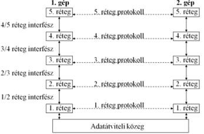
Adatkezelési folyamatok:
- Tokozás (Encapsulation): Az adatok felülről lefelé haladnak. Minden réteg hozzáadja a saját vezérlő információit (fejrész/header), és szükség esetén darabolja az adatot.
- Kicsomagolás (Decapsulation): A fogadó oldalon az adatok lentről felfelé haladnak, minden réteg lefejti a rá vonatkozó fejlécet, és továbbadja a tiszta üzenetet a felette lévőnek.
ISO-OSI Referenciamodell (7 réteg)
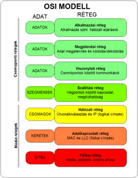
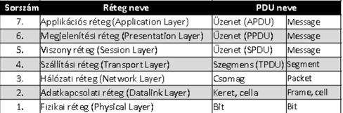
Az OSI (Open Systems Interconnection) modell hét rétegre bontja a hálózati kommunikációt. Az alsó rétegek (1-3) a hálózaton belüli adatmozgatásért, a felső rétegek (4-7) pedig a végpontok közötti adatkicserélésért és az alkalmazások kiszolgálásáért felelnek.
1. Fizikai réteg (Physical Layer)
- Feladata: A bitek továbbítása a fizikai közegen keresztül. Meghatározza a mechanikai és elektromos jellemzőket.
- Részletek: Itt dől el a feszültségszint, az időzítés, a csatlakozók lábkiosztása és a kábelek típusa (réz, optika, rádióhullám).
- Eszközök: Hub, Repeater (ismétlő), kábelek, transzceiverek.
- Egység: Bit.
2. Adatkapcsolati réteg (Data Link Layer)
- Feladata: Hibamentes átvitel biztosítása két közvetlenül kapcsolódó csomópont között.
- Részletek: Része a keretezés (framing), a hibafelismerés (CRC ellenőrzés) és a fizikai címzés (MAC cím). Két alrétegre oszlik:
- LLC (Logical Link Control): Logikai kapcsolat vezérlése.
- MAC (Media Access Control): Közeghozzáférés-vezérlés.
- Eszközök: Switch (kapcsoló), Bridge (híd).
- Egység: Keret (Frame).
3. Hálózati réteg (Network Layer)
- Feladata: Az útvonalválasztás (routing) és a logikai címzés kezelése több hálózaton keresztül.
- Részletek: Meghatározza, merre menjen a csomag a forrástól a célig. Itt történik a logikai (IP) címek kezelése és a hálózatok közötti forgalomirányítás.
- Eszközök: Router (forgalomirányító).
- Egység: Csomag (Packet).
4. Szállítási réteg (Transport Layer)
- Feladata: Végpontok közötti (end-to-end) megbízható adatátvitel biztosítása.
- Részletek: Felügyeli a sorrendiséget, a hibajavítást és a folyamatszabályozást. Itt különül el a megbízható, nyugtázott átvitel (TCP) és a gyors, de nem garantált átvitel (UDP).
- Protokollok: TCP, UDP.
- Egység: Szegmens (Segment).
5. Viszony réteg (Session Layer)
- Feladata: Kommunikációs csatornák (szekciók) felépítése, kezelése és lebontása az alkalmazások között.
- Részletek: Kezeli a párbeszédek szinkronizációját (ellenőrzőpontok beiktatása) és a dialógusvezérlést (ki beszélhet éppen).
6. Megjelenítési réteg (Presentation Layer)
- Feladata: Az adatok szintaktikai és szemantikai egységesítése.
- Részletek: Gondoskodik arról, hogy a különböző kódolású rendszerek megértsék egymást. Itt történik az adatok kódolása (pl. ASCII), titkosítása és tömörítése.
7. Alkalmazási réteg (Application Layer)
- Feladata: Közvetlen interfész biztosítása a hálózati szolgáltatások és a felhasználói programok között.
- Részletek: Itt futnak a hálózati alkalmazások protokolljai, mint a webböngészés (HTTP), fájlátvitel (FTP), vagy a névfeloldás (DNS).
TCP/IP vs. OSI Modell
Az internet gyakorlatában használt TCP/IP modell összevont rétegeket használ:
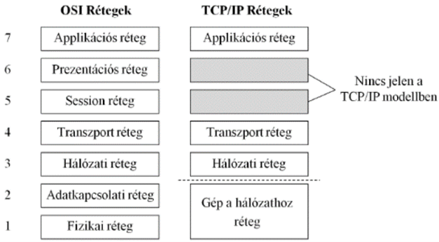
Hibrid Referenciamodell
Az oktatásban gyakran használt 5 rétegű modell, amely az OSI alsóbb rétegeit és a TCP/IP felsőbb rétegeit ötvözi:
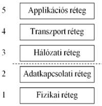
Hálózati köztes csomópont típusok
A hálózati kommunikáció során a végpontok közötti adatátvitelt különböző aktív hálózati eszközök (köztes csomópontok) segítik. Az alapján csoportosítjuk őket, hogy az OSI modell melyik rétegében működnek:
- Repeater (Ismétlő):
- Réteg: 1. Fizikai réteg.
- Feladata: A beérkező gyengült vagy torzult elektromos/optikai jelet felerősíti és újraformázza, majd továbbküldi. Célja a hálózat fizikai hosszának (kábeltávolság) megnövelése. Nem értelmezi az adatokat.
- Bridge (Híd):
- Réteg: 2. Adatkapcsolati réteg.
- Feladata: Két azonos típusú (pl. két Ethernet) hálózati szegmenst köt össze. MAC (fizikai) címek alapján megvizsgálja a kereteket, és csak azokat engedi át a másik oldalra, amelyek valóban oda is szólnak. Ezzel csökkenti a hálózat felesleges terhelését.
- Switch (Kapcsoló):
- Réteg: 2. Adatkapcsolati réteg.
- Feladata: Olyan, mint egy többportos híd. Megtanulja, hogy melyik portjára milyen MAC című eszköz van kötve (MAC tábla), és a beérkező kereteket kizárólag a célállomás portjára küldi tovább. Dedikált sávszélességet biztosít, és megszünteti az ütközéseket (collision).
- Router (Forgalomirányító):
- Réteg: 3. Hálózati réteg.
- Feladata: Különböző IP hálózatokat köt össze (pl. a belső otthoni hálózatot az Internettel). IP-címek és útválasztási táblázatok alapján dönti el, merre továbbítsa a csomagokat a legoptimálisabb úton.
- Access Point (AP - Hozzáférési pont):
- Feladata: Vezeték nélküli (Wi-Fi) hálózatot köt össze egy vezetékes (Ethernet) hálózattal. Általában adatkapcsolati szinten (Bridge-ként) működik, átemelve a rádiós kereteket a vezetékes hálózatra.
IP technológia (Internet Protocol)
Az IP a TCP/IP referenciamodell legfontosabb hálózati rétegbeli protokollja, amely az általános adatszállításért felel.
- Működési elve: Összeköttetés-mentes (connectionless) szolgáltatást nyújt a szállítási réteg (pl. TCP vagy UDP) felé. Ez azt jelenti, hogy a csomagok elküldése előtt nem épít fel kapcsolatot a vevővel, és nem is garantálja a sikeres megérkezést ("best-effort"). Ezt a logikai adatcsomagot Datagramnak hívjuk.
A Datagram (IP Csomag) jellemzői:
Minden IP csomag egy önálló, független adategység, amely tartalmazza a kézbesítéshez szükséges összes információt (például a forrás és a cél címét), így a hálózat bármelyik útvonalon el tudja juttatni a célhoz.
Az IPv4 csomag felépítése:
- Header (Fejrész): Változó hosszúságú, 20-tól 60 bájtig terjedhet (5–15 darab 4 bájtos/32 bites szóból áll). Tartalmazza a verziót, a csomag élettartamát (TTL), a protokoll azonosítóját, valamint a forrás és a cél IP-címét.
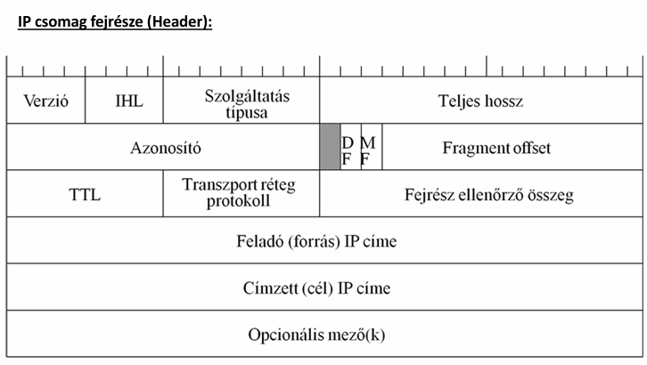
- Payload (Rakrész/Adat): A szállítási rétegtől kapott adat (pl. egy TCP szegmens). A teljes IP csomag maximális mérete 64 kB (65 535 bájt) lehet.
- Fontos: Az IP fejrész tartalmaz ellenőrző összeget (Header Checksum), de magára a rakrészre nincs ellenőrzés (ezt a felsőbb rétegeknek kell megoldaniuk).
Darabolás (Fragmentation):
A fizikai hálózatoknak van egy maximális keretmérete (MTU - Maximum Transmission Unit, pl. Ethernetnél 1500 bájt). Ha egy IP csomag ennél nagyobb, a forgalomirányító (Router) automatikusan kisebb darabokra vágja (fragmentálja). Az újraösszeszerelést csak a legvégső célállomás végzi el.
IP Címzés (IPv4)
Az IP-cím a hálózati réteg logikai azonosítója.
- Mit azonosít? Nem magát a számítógépet, hanem a hálózati interfészt (hálózati kártyát) azonosítja egyértelműen. Egy routernek például annyi IP-címe van, ahány hálózathoz csatlakozik.
- Kiosztás: A globális IP-címteret az IANA (Internet Assigned Numbers Authority) nevű szervezet osztja ki és felügyeli.
A cím szerkezete:
A 32 bites IP-cím logikailag mindig két részre oszlik:
- Hálózat azonosító (Network ID): Megmutatja, melyik hálózathoz (broadcast tartományhoz) tartozik a gép.
- Gép azonosító (Host ID): Egyértelműen azonosítja a konkrét gépet az adott hálózaton belül.
Címkezelés és Hálózati Maszk
Hogy a számítógép tudja, hol végződik a hálózat azonosítója és hol kezdődik a gép azonosítója, alhálózati maszkot (Subnet Mask) használunk.
- A
/n jelölés (CIDR prefix): Megmondja, hogy a 32 bitből pontosan mennyi (n darab) bit jelöli a hálózatot. Például a /24 azt jelenti, hogy az első 24 bit a hálózaté (ez decimálisan a 255.255.255.0 maszknak felel meg).
IP címosztályok (Klasszikus osztályos címzés)
Az internet hajnalán a címeket fix méretű osztályokba sorolták, hogy megkönnyítsék az elosztást:
- A osztály:
- Cél: Hatalmas, több millió gépet tartalmazó hálózatoknak (pl. óriásvállalatok, internetszolgáltatók).
- Szerkezet: 8 bit a hálózatnak, 24 bit a gépeknek (Maszk:
/8 vagy 255.0.0.0).
- Kezdő bájt: 1 – 126.
- B osztály:
- Cél: Közepes és nagy hálózatoknak (pl. egyetemek, nagy cégek).
- Szerkezet: 16 bit a hálózatnak, 16 bit a gépeknek (Maszk:
/16 vagy 255.255.0.0).
- Kezdő bájt: 128 – 191.
- C osztály:
- Cél: Kisebb hálózatoknak (pl. irodák, otthonok).
- Szerkezet: 24 bit a hálózatnak, 8 bit a gépeknek (Maszk:
/24 vagy 255.255.255.0).
- Kapacitás: Egy ilyen hálózatban maximum 254 gép lehet.
- Kezdő bájt: 192 – 223.
IP-vezérlő mechanizmusok: ICMP (Internet Control Message Protocol)
Az IP protokoll önmagában nem garantálja a csomagok célba érést, és hiba esetén nem tud visszajelzést adni a feladónak. Ezt a hiányosságot hivatott megoldani az ICMP.
- Besorolása: Bár az ICMP üzenetek az IP adatcsomagok belsejében (rakrészként) utaznak – mintha egy felsőbb rétegbeli protokoll lennének –, funkciójukat tekintve a hálózati réteghez (3. réteg) tartoznak, mert az IP szoros kiegészítői.
- Fő feladata: A hálózati kommunikáció során fellépő problémák (pl. vonalszakadás, torlódás, elérhetetlen célállomás) jelzése, valamint diagnosztikai és ellenőrző funkciók ellátása.
Az ICMP üzenet felépítése
Az ICMP csomagok fejrésze egyszerű és az alábbi négy alapvető mezőből áll:
- Típus (Type): Meghatározza az üzenet fő okát vagy kategóriáját.
- Példák:
Destination Unreachable (Cél elérhetetlen), Redirect (Útvonal-módosítás javaslata), Echo Request (Ping kérés).
- Kód (Code): A Típushoz tartozó finomított, részletesebb információ.
- Példa: Ha a Típus "Cél elérhetetlen", a Kód pontosítja a hiba okát (pl. hálózat elérhetetlen, gép elérhetetlen, vagy a kért port zárt).
- Ellenőrző összeg (Checksum): Biztosítja az ICMP üzenet sértetlenségét. Segítségével a fogadó fél ellenőrizheti, hogy történt-e adatvesztés vagy torzulás az út során.
- Adat (Data): Kiegészítő információkat tartalmaz a hibával kapcsolatban. Hibaüzenet esetén ez a mező általában a hibát okozó eredeti IP-csomag fejrészét és első pár bájtját tartalmazza, így a küldő pontosan be tudja azonosítani, hogy melyik csomagja akadt el.
Gyakorlati alkalmazás (Diagnosztika)
A hálózatok üzemeltetése során a leggyakoribb hibakereső parancsok közvetlenül az ICMP protokollra épülnek:
- Ping: Egy ICMP visszhangkérést (Echo Request) küld a célgépnek. Ha a gép elérhető, egy ICMP visszhangválasszal (Echo Reply) reagál. Ezzel tesztelhető a vonal megléte és a válaszidő.
- Traceroute (tracert): Az ICMP időtúllépési hibaüzeneteit (Time Exceeded) használja fel arra, hogy feltérképezze, pontosan mely routereken keresztül halad át a csomag a célig.
Forgalomirányítás (Routing)
A forgalomirányítás az a folyamat, amely során a hálózat eldönti, hogy a beérkező csomagok (IP datagramok) milyen útvonalon, merre haladjanak tovább a célállomás felé.
- Hol történik? Nemcsak a forgalomirányítók (Routerek), hanem maguk a végpontok (Hostok) is hoznak forgalomirányítási döntéseket (például amikor eldöntik, hogy a csomagot a helyi hálózaton adják át, vagy elküldik az alapértelmezett átjárónak).
A forgalomirányítási táblázat (Routing tábla)
Minden forgalomirányítást végző eszköz egy belső adatbázist, az úgynevezett routing táblát használja a döntéshozatalhoz. Ennek tipikus oszlopai:
| Célhálózat (Destination) |
Netmask (Maszk) |
Kimenő interfész (Interface) |
Következő csomópont (Next hop) |
Metrika (Költség) |
| A hálózat IP címe, ahova a csomag tart. |
Meghatározza a célhálózat méretét. |
A router saját csatlakozója (pl. eth0), amin kiadja a csomagot. |
A szomszédos router IP címe, akinek át kell adni a csomagot. |
Az útvonal "jósága" (kisebb érték a jobb, pl. ugrások száma vagy sávszélesség). |
Működési elv (Longest Prefix Match): Ha egy beérkező csomag célcíme több bejegyzésre is illeszkedik a táblában, a router mindig a legspecifikusabbat (a leghosszabb maszkkal rendelkezőt) választja.
Forgalomirányítási osztályok
Az útválasztási táblázat feltöltésének és karbantartásának módja alapján három fő osztályt különböztetünk meg:
1. Minimális routing
- Jellemzője: Izolált, forgalomirányító (router) nélküli megoldás.
- Működése: Csak a közvetlenül csatlakoztatott (egyazon fizikai hálózaton lévő) eszközök közötti kommunikációt teszi lehetővé. Külső hálózatba nem lehet csomagot küldeni.
2. Statikus routing
- Jellemzője: A routing tábla bejegyzéseit a rendszergazda manuálisan, kézzel viszi be.
- Előnye: Nagyon biztonságos, nem terheli a hálózatot extra útválasztási forgalommal, és a router CPU-ját is kíméli.
- Hátránya: Nem alkalmazkodik a változásokhoz (ha egy vonal megszakad, a kapcsolat elveszik, amíg a rendszergazda át nem írja a táblát). Csak kisméretű hálózatokban praktikus.
3. Dinamikus routing
- Jellemzője: A forgalomirányítók speciális routing protokollok segítségével kommunikálnak egymással, és automatikusan építik fel, illetve frissítik a táblázataikat. Hibatűrő, mert vonalszakadás esetén automatikusan új utat keres. Két fő alcsoportja van:
-
Belső forgalomirányítás (IGP - Interior Gateway Protocol): Egyetlen autonóm rendszeren (pl. egy egyetem vagy cég saját hálózata) belül keresi a legelőnyösebb útvonalat.
- Távolságvektor (Distance Vector) alapú: Csak a szomszédaitól kapott információkra támaszkodik, az "ugrások" számát (hop count) méri. (Pl. RIP, EIGRP).
- Link-állapot (Link-State) alapú: Minden router ismeri a teljes hálózat topológiáját, és bonyolult matematikai algoritmussal (Dijkstra) számolja ki a legrövidebb utat sávszélesség alapján. (Pl. OSPF, IS-IS).
-
Külső forgalomirányítás (EGP - Exterior Gateway Protocol): Különálló autonóm rendszerek (különböző szolgáltatók, nagyvállalatok) közötti útvonalak meghatározására szolgál.
- Útvonalvektor (Path Vector) alapú: Nem a leggyorsabb, hanem a szabályozási és gazdasági szempontból legmegfelelőbb utat választja. A jelenlegi Internet alapköve. (Pl. BGP).
Távolságvektor alapú forgalomirányítás (Distance Vector)
Ennél a módszernél a routing tábla minden egyes célhálózathoz a legjobb (legkisebb költségű) küldési irányt és a hozzá tartozó távolságot (metrikát) tárolja. A működés alapja a Bellman-Ford algoritmus.
A Bellman-Ford algoritmus lépései:
- Információcserék: Minden i csomópont megkapja az összes közvetlen k szomszédjától azok távolságvektorait, azaz a D(k,j) értékeket (ahol D(k,j) a szomszéd távolsága a j céltól).
- Metrika számolás: Az i csomópont kiszámolja, hogy milyen messze lenne a j cél, ha a k szomszédon keresztül menne. A képlet:
xi,k,j:=d(i,k)+D(k,j)
(Saját távolság a szomszédig + szomszéd távolsága a célig).
- Tábla frissítése: Ha ez az új számított távolság kisebb, mint az eddig ismert legjobb út (xi,k,j<D(i,j)), akkor a k szomszédon át vezető út előnyösebb. A csomópont frissíti a saját tábláját:
D(i,j):=xi,k,j
- Ismétlés: Egy meghatározott ciklusidő várakozás után a folyamat kezdődik elölről az 1. lépéssel.
Eredmény: Az eljárás véges számú lépés (információcsere) után konvergál, és optimális utat szolgáltat a forrás és a cél csomópontok között.
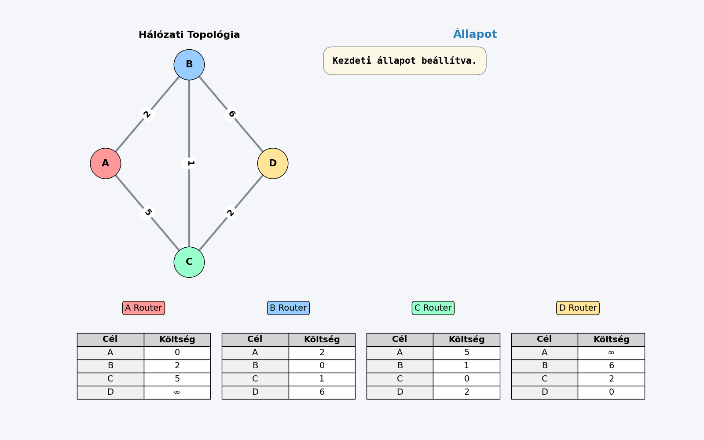
Problémák és hátrányok:
- Túl kicsi kezdőérték: Ha az eddig használt optimális út megsérül, a hálózat nehezen áll át.
- Végtelenig számlálás (Count-to-infinity): A rendszer nagyon lassan reagál a negatív topológiai változásokra (pl. vonalszakadás). A routerek hamis információk alapján folyamatosan növelhetik a távolságot egymás között, mielőtt rájönnének, hogy az út megszűnt.
Gyakorlati megvalósítások (Protokollok):
- RIP (Routing Information Protocol): Régebbi protokoll, csak kis méretű hálózatokba ajánlott. Alapvető hátránya, hogy nincs benne autentikáció (biztonsági kockázat), és lassan konvergál.
- EIGRP (Enhanced Interior Gateway Routing Protocol): A Cisco saját fejlesztésű, fejlett protokollja, elsősorban LAN hálózatokra. Kijavítja a végtelenig számlálás hibáját és gyorsabb reagálást biztosít.
Link-állapot alapú forgalomirányítás (Link-State Routing)
A Link-állapot alapú forgalomirányítás során minden router rendelkezik a hálózat teljes térképével (topológiájával). Nem csak a szomszédoktól kapott távolságadatokra hagyatkoznak, hanem saját maguk számítják ki az optimális útvonalakat.
A mechanizmus lépései:
- Szomszédok felfedezése: A router "Hello" üzenetekkel azonosítja a közvetlenül kapcsolódó szomszédait.
- Költségmérés: Megméri a szomszédok felé vezető kapcsolatok költségét (késleltetés, sávszélesség).
- LSP (Link State Packet) készítése: Egy adatcsomagot állít össze, amely tartalmazza a szomszédait és a hozzájuk tartozó költségeket.
- Elárasztás (Flooding): Az LSP csomagot elküldi az összes többi routernek. Minden router megkapja mindenki más állapotát, így mindenki ugyanazt a topológiai adatbázist építi fel.
- Útvonalszámítás (Dijkstra): A router lefuttatja a Dijkstra-algoritmust a saját adatbázisán, hogy meghatározza a legrövidebb utakat (feszítőfa készítése).
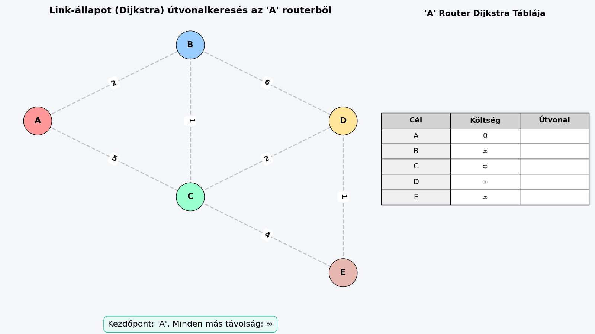
Főbb protokollok:
- OSPF (Open Shortest Path First): Belső forgalomirányító protokoll (IGP), leginkább vállalati hálózatokban (LAN/MAN) használják. Az IP réteg felett működik.
- IS-IS (Intermediate System to Intermediate System): Gerinchálózati protokoll, szolgáltatói környezetben népszerű. Közvetlenül az adatkapcsolati réteg felett fut, így független a hálózati protokolloktól (pl. IPv4/IPv6).
Transzport protokollok IP felett
A hálózati (IP) réteg felett működő transzport (szállítási) réteg alapvető célja, hogy a végpontok közötti adatátvitelt kiszolgálja, és biztosítsa, hogy az alkalmazási (legfelső) rétegben is szabványos lehessen a kommunikáció.
A transzport réteg funkciói
A transzport réteg az alábbi fő feladatokat látja el a hálózati kommunikáció során:
- Címzés: A végponti kommunikációt folytató programok (alkalmazások) egyértelmű azonosítása. Bár az IP-cím azonosítja a számítógépet, a transzport réteg (a portszámok segítségével) határozza meg, hogy a beérkező adat pontosan melyik szoftverhez tartozik.
- Kapcsolat építése és bontása: A végpontok közötti logikai kapcsolat szabályos felépítése, a szegmenssorozatok (feldarabolt adategységek) küldésének és fogadásának menedzselése, valamint a kommunikáció lezárultával a kapcsolat bontása.
- Adatfolyam szabályozás: A hálózati torlódások elkerülése és a forgalomelakadások kezelése (torlódásvezérlés), megakadályozva ezzel a hálózat túlterhelését és az adatvesztést.
- Multiplexálás: A hálózati réteg erőforrásainak hatékony kihasználása azáltal, hogy több párhuzamosan futó program adatfolyamát összefogja, és egyetlen hálózati csatornán továbbítja (majd a túloldalon szétválogatja).
Transzport protokollok szolgáltatásai
A transzport réteg protokolljai (mint a TCP) a következő szolgáltatásokat nyújtják a felsőbb, alkalmazási rétegek felé:
- Szegmensek kézbesítése: Garantálják a szegmensek megbízható módon történő, sorrendhelyes kézbesítését (nyugtázási mechanizmusokkal és hibajavítással).
- Adatfolyam vezérlés: Szabályozzák az adatáramlás sebességét a küldő és a fogadó fél között, biztosítva, hogy a gyorsabb küldő ne terhelje túl a lassabb fogadót.
- Multiplexálás: Lehetővé teszik, hogy a felsőbb rétegek programjai megosszák a hálózati kapcsolatot, így egy időben több hálózati szolgáltatás is zavartalanul működhet.
UDP (User Datagram Protocol)
Az UDP egy a hálózati réteg (IP) felett működő transzport (szállítási) rétegbeli protokoll. Legfőbb jellemzője az egyszerűség és a gyorsaság.
Alapvető jellemzők
- Összeköttetés nélküli (Connectionless): Adatküldés előtt nem épít fel kapcsolatot a fogadó féllel. A csomagokat egyszerűen elküldi a célállomás felé.
- Nem megbízható kapcsolat:
- Nyugta nélküli: Nem kér és nem is kap visszajelzést (nyugtát) arról, hogy a csomagok sikeresen megérkeztek-e a célhoz.
- Nincs beépített hibajavítás: Maga az UDP protokoll nem javítja a bithibákat, nem kéri újra az elveszett csomagokat, és nem állítja sorba a megkeveredett adatokat.
- Ha hibajavításra van szükség, azt mindig felsőbb szinten, magának az alkalmazásnak kell megoldania.
UDP-t használó alkalmazások jellemzői
Az UDP-t olyan programok használják, amelyeknél a sebesség fontosabb a tökéletes megbízhatóságnál:
- Adatvesztés-tolerancia: Képesek elviselni, ha egy-egy csomag elvész a hálózaton (pl. élő videó- vagy hangközvetítés).
- Átviteli ráta érzékenység: Fontos számukra a folyamatos, gyors adatáramlás és az alacsony késleltetés (valós idejűség).
Az UDP szegmens felépítése
Az UDP szegmens két fő részből áll: egy nagyon egyszerű, 8 bájtos fejrészből (Header) és magából az adatból (Rakrész).
1. Fejrész (Header) szerkezete:
A fejrész két darab 32 bites (4 bájtos) szóból áll:
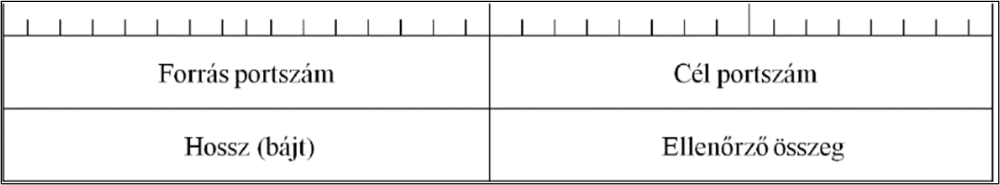
- 1. szó:
- Forrás portszám: Azonosítja a küldő alkalmazást.
- Cél portszám: Azonosítja a fogadó alkalmazást.
- 2. szó:
- UDP szegmens hossza: Megadja a teljes szegmens (fejrész + rakrész) együttes hosszát.
- Fejrész ellenőrző összeg (Checksum): Arra szolgál, hogy észlelje a szállítás közben keletkezett esetleges adatsérüléseket.
2. Rakrész (Payload):
- Tartalma: Tetszőleges adat lehet (bármilyen felsőbb rétegbeli protokoll adategysége, azaz PDU-ja).
- Előnyök: Egyszerű felépítése miatt kifejezetten előnyös és gyakran használt tűzfalakon átvezetett (tunneling) protokollok áthidalására.
- Felelősség: Az UDP protokoll a rakrészben szállított adat sorsával nem foglalkozik. A bithibák javítását, valamint az egynél több példányban megérkező, vagy a teljesen elveszett (kevesebb példányos) kézbesítések kezelését teljes mértékben a rakrészben szállított felsőbb szintű protokollra (alkalmazásra) bízza.
TCP (Transmission Control Protocol)
Az UDP "laza" és gyors működésével szemben a TCP egy a hálózati réteg (IP) felett működő, a maximális megbízhatóságra és pontosságra kihegyezett transzport (szállítási) rétegbeli protokoll.
Alapvető jellemzők
- Összeköttetés-alapú (Connection-oriented): Mielőtt bármilyen tényleges adatot küldene, a két végpont (a kliens és a szerver) logikai kapcsolatot épít ki egymással, ami a szegmenssorozatok küldésének és fogadásának teljes idejére fennáll.
- Megbízható, nyugtázott kapcsolat: Minden elküldött adatról visszajelzést (nyugtát) vár. Ha egy csomag elveszik, a TCP automatikusan gondoskodik az újraküldésről.
- Sorszámozás: A hálózaton utazó adatok minden egyes bájtját szigorúan sorszámozza (Sequence Number). Ez garantálja, hogy a fogadó oldalon a csomagok helyes sorrendben álljanak össze.
- Következő várt bájt jelzése: A kommunikáció során a fogadó fél mindig megüzeni a társának, hogy mi a soron következő, általa várt bájt sorszáma.
- Áramlásszabályozás (Flow control): A vevő folyamat (processz) folyamatosan visszajelzi a küldőnek a saját befogadó kapacitását (a legközelebbi szegmens megengedett méretét / ablakméretét). Ezzel elkerülik, hogy a gyorsabb fél túlterhelje a lassabbat.
A TCP szegmens felépítése
A TCP szegmens két részből áll: egy nagyon részletes fejrészből (Header) és a tényleges adatból (Rakrész). A fejrész 32 bites (4 bájtos) "szavakból" épül fel:
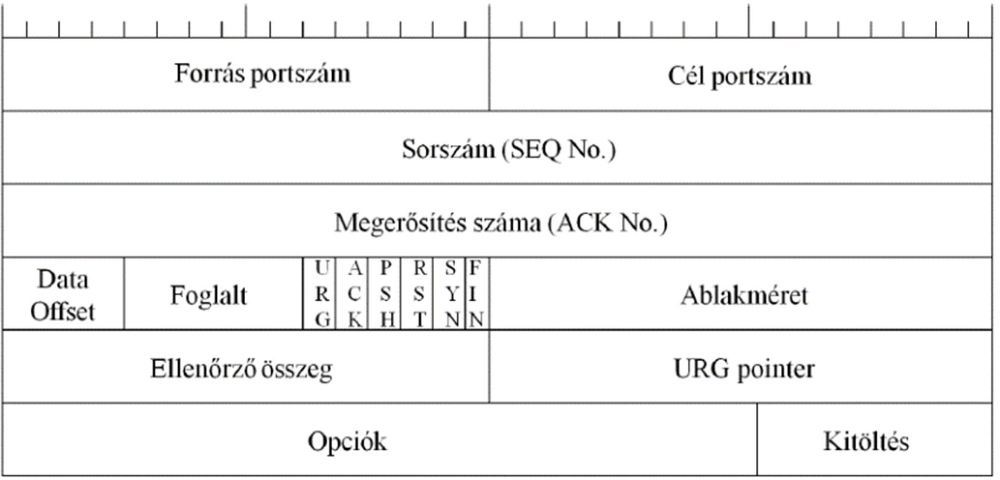
- 1. szó: Forrás portszám és Cél portszám: Azonosítják a kommunikáló alkalmazásokat a két gépen.
- 2. szó: Szegmens sorszáma (Sequence Number):
- Ha a SYN bit = 0: Ez a szám a szegmensben lévő első adatbájt sorszámát jelöli.
- Ha a SYN bit = 1: Ez a kapcsolatfelépítéskor használt kezdeti szekvenciaszám (ISN).
- 3. szó: Nyugtázási szám (Acknowledgment Number): A partner által várt következő szekvenciaszám (tehát eddig minden adat hiánytalanul megérkezett).
- 4. szó:
- Adat offset: Megadja a fejrész hosszát.
- Fenntartott mező: Későbbi fejlesztésekre fenntartva.
- Kontroll bitek (Flagek): A kapcsolat állapotát vezérlő jelzőbitek:
URG, ACK (nyugta), PSH, RST (megszakítás), SYN (szinkronizálás), FIN (befejezés).
- Ablakméret (Window Size): A nyugtázott bájtok száma, amelyet a vevő még hajlandó fogadni (ez az áramlásszabályozás alapja).
- 5. szó:
- Ellenőrző összeg (Checksum): Az adatok sértetlenségének ellenőrzésére.
- Sürgősségi mutató (URG pointer): Jelzi, ha a csomagban azonnal feldolgozandó, sürgős adat van.
- 6. szó: Opciók és Kitöltés (Padding): Kiegészítő beállítások (a kitöltés biztosítja, hogy a fejrész hossza mindig osztható legyen 32 bittel).
TCP kommunikációs mechanizmusok (Kapcsolatfelépítés)
Mivel a TCP összeköttetés-alapú, a kommunikáció megkezdése előtt egy szigorú protokoll szerint fel kell építeni a kapcsolatot. Ezt a folyamatot háromutas kézfogásnak (Three-way handshake) nevezzük, amelynek lépései:
- SYN (Kliens ➔ Szerver): A kliens kezdeményezi a kapcsolat kiépítését. Küld egy szegmenst, amelyben a
SYN bit be van állítva, és elküldi a saját kezdeti sorszámát.
- SYN/ACK (Szerver ➔ Kliens): A szerver megkapja a kérést, és egy jóváhagyó válaszüzenetet küld vissza. Ebben egyrészt nyugtázza a kliens kérését (az
ACK bit beállításával), másrészt ő is küld egy szinkronizációs kérést (a SYN bit beállításával) a saját kezdeti sorszámával.
- ACK (Kliens ➔ Szerver): A kliens megkapja a szerver válaszát, és egy utolsó nyugtával (
ACK bit) jóváhagyja azt.
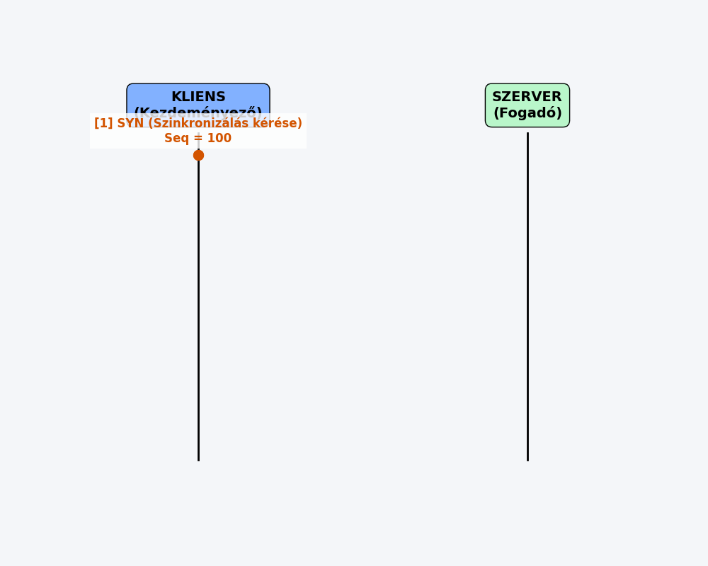
Ezzel a "kézfogással" a kapcsolat sikeresen felépült, és megkezdődhet a tényleges adatok (rakrészek) biztonságos, nyugtázott átvitele.
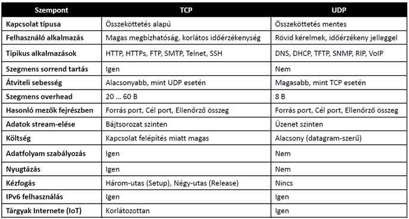